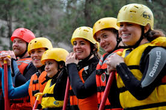

About Us: Dry Oar
We are a company made of former fishers who have been trained on how to be guides, using their years of experience on the river to take adventruerous individuals or family down the Davao river. White water rafting is amazing, it is a great time to test your ability and have an adventure. White water rafting is good for families it is fun and chanellging but also safe and enjoyable!!!